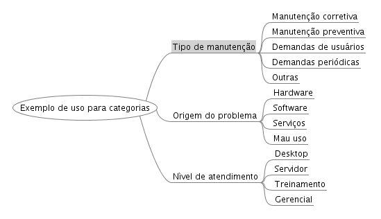

Problemas (Admin -> Ocorrências -> Problemas)
Um problema é uma classificação de tipos de falhas, defeitos ou erros possíveis para resolução ou ainda procedimentos ou atividades para execução.
Cada problema é vinculado a um tempo de solução desejável, utilizado para controle de SLAs.
Exemplos de possíveis problemas: Configuração de e-mail, Backup, Instalação de S.O., Instalação de impressora, Erro de sistema, Treinamento, Participação em reunião, etc..
Cadastrando problemas (Admin -> Ocorrências -> Problemas -> Novo registro)
Campo Problema: é a descrição textual do problema a ser cadastrado.
Campo Área: um problema pode ser associado a uma área de atendimento específica ou a área nenhuma, nesse caso, o problema ficará visível independentemente da área selecionada na
abertura de chamados.
Campo SLA: selecione aqui o tempo de solução previsto para chamados com esse tipo de problema. É possível criar diferentes tipos de SLAs para o mesmo tipo de problema. Isso é possível em função das suas possíveis categorizações.
Categorias:
Cada problema pode possuir até 3 categorias e diversos tipos de classificações com diferentes tempos de solução. Por exemplo, um problema pode ser classificado quanto à origem do problema como sendo de hardware ou de software, quanto ao tipo de manutenção como sendo preventiva ou corretiva, quanto ao nível de atendimento como sendo em Desktop ou Servidor. O tipo de categoria e as possíveis classificações são criados pelo próprio administrador do sistema de acordo com suas necessidades.
Por padrão, a nomenclatura dos campos de categoria são: Categoria 1, Categoria 2 e Categoria 3. Essa nomenclatura pode ser alterada no menu Admin -> Configurações ->
Configurações gerais.
Veja um exemplo de possível configuração para as 3 categorias:

Imagem de exemplo para o uso de categorias no OcoMon.
Para criar os tipos de classificação de cada categoria basta clicar no "Gerenciar" ao lado direito do campo da categoria correspondente na própria tela de cadastro de problemas.